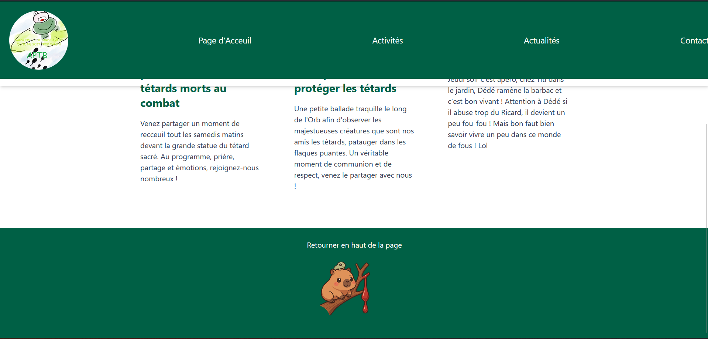
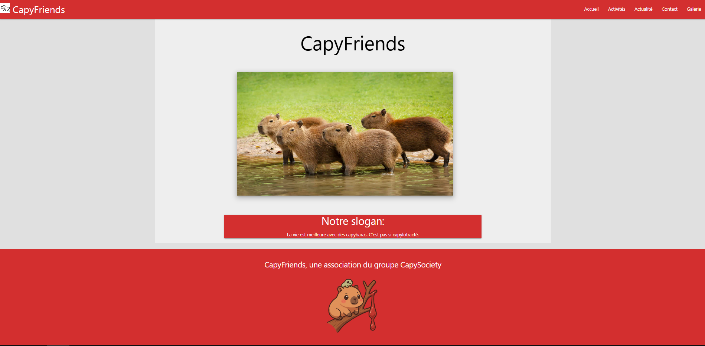

En Colaboration avec APTB :



Utilité pour l’humain Bois : matériau de construction, chauffage, fabrication d’objets. Alimentation : fruits, noix, sirop (comme l’érable). Médicaments : certaines écorces, résines ou feuilles ont des propriétés médicinales (ex : écorce de saule → aspirine). Culture & symboles : l’arbre est un symbole de vie, de force et de sagesse dans de nombreuses traditions. Exemples d’arbres célèbres Chêne : longévité et solidité. Baobab : tronc gigantesque, appelé “l’arbre bouteille”. Séquoia géant : les plus grands arbres du monde (plus de 100 m de haut). Olivier : symbole de paix et de longévité en Méditerranée.
En Colaboration avec APTB :

